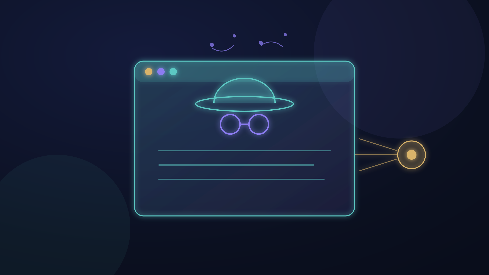
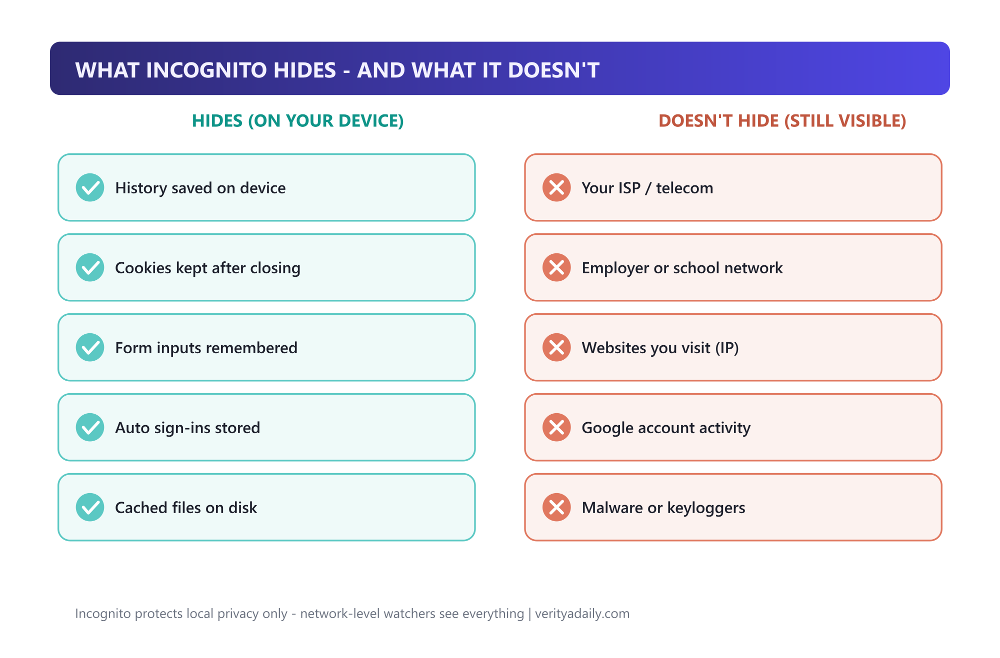
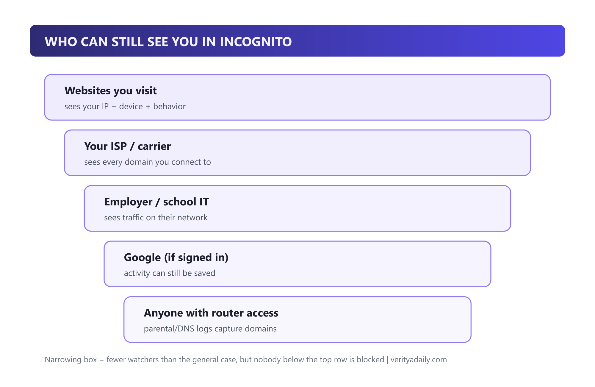
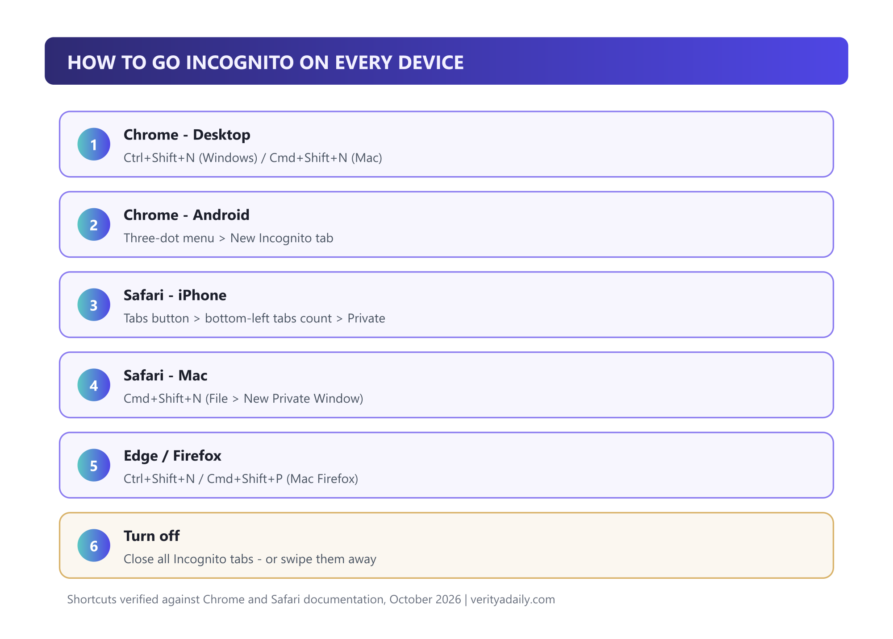
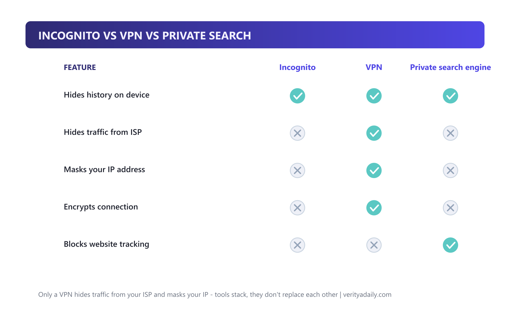

What Is Incognito Mode? What It Hides (And What It Doesn't)

Incognito mode stops your browser from saving your history, cookies and form inputs on your device - and that is genuinely useful. But it does not hide you from your internet provider, your employer's network, the websites you visit, or anyone watching the router. Google learned that lesson the expensive way: it agreed to a settlement over Incognito tracking that included destroying billions of collected records. Here's exactly what the mode does, what it can't, and when you need real privacy tools instead.
Quick answer
Incognito mode = local privacy, not anonymity. It hides: saved history, cookies after you close, form inputs, sign-ins, cached files - all on your device only. It doesn't hide: your ISP, employer/school network, websites (they see your IP), or Google account activity if you're signed in. For network-level privacy you need a VPN; for search tracking, a private search engine.
In this guide
Key takeaways
- Incognito = device-local privacy. History, cookies, form data and cache are dropped when you close the tabs.
- Everyone network-side still sees you: ISP, employer IT, school network, websites, and whoever controls the router.
- The Google settlement made it official: billions of "private" browsing records were destroyed after tracking allegations.
- Everyday uses are still valid: shared computers, gift shopping, price checks without personalization, testing sites logged-out.
- Need real anonymity? A VPN masks your IP and encrypts traffic from your ISP - incognito does neither.
What Incognito mode actually does
Every major browser ships a private session mode: Chrome calls it Incognito, Safari calls it Private Browsing, Edge has InPrivate, Firefox uses Private Window. The mechanics are the same everywhere. When you open a private window, the browser creates a temporary, isolated session that simply doesn't write your activity to disk:
- No browsing history saved - visited URLs never enter your local timeline.
- Cookies are session-scoped - sites can track you inside the session, but everything is discarded the moment you close the tabs.
- Form inputs and passwords aren't remembered - no accidental autofill of your address or card into someone else's session later.
- Cache and site data don't persist - nothing is left on disk to clean up.
That's the entire feature set. It's a cleanup function, not a cloak - everything you do still travels the same internet as everyone else's traffic, visible to the same watchers.
What it hides vs what it doesn't

| Hides (on your device) | Doesn't hide (still visible) |
|---|---|
| Browsing history saved locally | Your ISP / mobile carrier |
| Cookies after you close tabs | Employer or school network |
| Form inputs and card autofill | Websites you visit (they see your IP) |
| Auto sign-ins to sites | Google account activity when signed in |
| Cached files on disk | Malware, keyloggers, phishing pages |
The third row on the right side deserves emphasis: every website you visit sees your public IP address - which maps to your general location and provider - no matter which browser mode you use. Ad trackers, analytics scripts and login walls operate identically in Incognito.
Who can still see you

Your ISP sees every domain you connect to - it's the pipe, not the browser, that matters. In many countries ISPs can log and even sell anonymized browsing records. Employer and school networks route your traffic through their own monitoring - the r/IT threads on this topic are consistent and blunt: assume nothing is private on a work laptop. Websites fingerprint you through your IP, device and behavior. And if you sign into Google inside Incognito, Chrome explicitly warns that your activity may be saved to that account - the mode doesn't strip your identity, it just stops the local save.
The Google settlement: why the myth unraveled
In 2020, a class action alleged Google kept tracking users' activity even while they browsed in Incognito - through Analytics, Ad Manager and other tools embedded in millions of websites. The suit sought $5 billion in damages. Google settled in December 2023 (court approval followed in early 2024), and the settlement's most concrete term wasn't cash to users: Google agreed to destroy billions of records collected from private-browsing sessions and to clarify what Incognito does in its disclosures, per Reuters, BBC and CBS reporting on the case.
The practical lesson outlasted the lawsuit: Incognito's promise was always about your local device. The suit's data-collection claims survived years of litigation precisely because most users believed the privacy was broader than the disclosure said. Read Chrome's own Incognito warning screen carefully - it has said the same thing all along: "Your activity might still be visible to websites you visit, your employer or school, or your internet service provider."
How to go incognito on every device

- Chrome - Windows/Linux: Ctrl + Shift + N (or menu → New Incognito window).
- Chrome - Mac: Cmd + Shift + N.
- Chrome - Android: three-dot menu → New Incognito tab.
- Safari - iPhone/iPad: tap the Tabs button, then the tab-count pill at the bottom-left corner to flip to Private.
- Safari - Mac: Cmd + Shift + N (File → New Private Window).
- Edge / Firefox: Ctrl + Shift + N (Edge) / Cmd + Shift + P (Firefox on Mac).
To exit: close all private tabs. iOS also locks private tabs behind Face ID/Touch ID if you enable it in Safari settings - worth doing on shared devices. You can even create a desktop shortcut that always opens Chrome in Incognito by adding -incognito to the launch target.
The "incognito history" question
It's the most-searched follow-up - "how to see incognito history" - and the honest answer has two halves:
On your own device: there's nothing to see once tabs close - the whole point is that no local record was written. Tools sold as "incognito history viewers" (often spyware) work only before the session ends, via router logs or parental-control DNS logging. Anyone marketing you your own incognito history is selling surveillance, not a feature.
On networks: the record exists whether you like it or not - router and DNS logs, ISP records, and employer proxies all captured the domains you visited. You can't delete those from your side. If that bothers you, the fix is preventive: a VPN encrypts your traffic so those watchers see only the VPN server, not your destinations.
Incognito vs VPN vs private search

| Feature | Incognito | VPN | Private search |
|---|---|---|---|
| Hides history on device | ✅ | ✅ | ✅ (searches only) |
| Hides traffic from ISP | ❌ | ✅ | ❌ |
| Masks your IP address | ❌ | ✅ | ❌ |
| Encrypts connection | ❌ | ✅ | ❌ |
| Reduces search profiling | ❌ | ❌ | ✅ |
The layers stack: Incognito cleans your device, a VPN shields your network path, a private search engine reduces profiling. A journalist in a sensitive situation needs all three plus more; a gift shopper on the family laptop needs exactly one.
When to use it (and when it's pointless)
Genuinely useful:
- Shopping for gifts on a shared family computer - no surprise spoilers in autofill or history.
- Checking email or social on a friend's or hotel computer without sign-in residue.
- Viewing a news site or service logged-out after hitting a paywall state.
- Comparing prices without your existing cookies personalizing every result.
- Testing your own website logged-out during development.
Pointless (or worse, false comfort):
- Hiding activity from your ISP, employer or school - they see the domains regardless.
- Evading malware or phishing - Incognito offers zero security protection.
- Anonymous downloading or sensitive research - your IP is attached to every request.
- Bypassing network blocks - private mode doesn't change what the firewall allows.
One nuance people miss: Incognito is also handy when a friend wants to check their email on your laptop - it protects both sides of a shared session, not just yours.
🏆 Final verdict
Incognito mode is a hygiene feature, not a privacy shield. Use it for exactly what it does - keeping sessions off shared devices - and pair it with a VPN when the network itself is the threat. If a tool promises to "see incognito history," treat it as surveillance software. And remember the settlement's lesson: even the biggest browser vendor couldn't blur the line between local privacy and anonymity without paying for it.
FAQ
Is incognito mode 100% private?
No. It only prevents your browser from saving activity locally. Your ISP, employer or school network, the websites you visit and anyone with router access still see your traffic. Google settled a lawsuit over exactly this gap between perception and reality.
Why would a person use incognito mode?
Everyday uses: gift shopping on shared computers, signing into accounts on other people's devices without leaving residue, testing websites logged-out, and getting non-personalized prices. All are local-privacy jobs - which is what Incognito actually does.
Is it safe to go incognito mode?
Safe, yes - it's just a browser session mode. But it protects against nothing malicious: no malware blocking, no phishing defense, no network encryption. For security you still need normal hygiene; for network privacy, a VPN.
How do I turn on incognito mode?
Chrome desktop: Ctrl+Shift+N (Windows/Linux) or Cmd+Shift+N (Mac). Chrome Android: three-dot menu → New Incognito tab. Safari iPhone: Tabs button → tab-count pill at bottom-left → Private. Close all private tabs to exit.
How do I see or delete incognito history?
You can't on your own device - incognito writes no local history to delete. The record lives where you can't reach it: router/DNS logs, your ISP, employer networks. A VPN prevents those logs going forward by encrypting your traffic before it leaves your device.
📚 Sources & Citations (6)
- Google Chrome Help - Browse in Incognito mode (official: who can still see your activity)
- Reuters - Google settles $5 billion consumer privacy lawsuit (Dec 2023)
- CBS News - Google to destroy billions of data records to settle Incognito suit
- BBC - Google settles $5bn lawsuit for 'private mode' tracking
- Mozilla - Incognito browser: what it really means (ISP/school/employer visibility)
- Kaspersky - Pros and cons of Incognito mode
Keep exploring: lock down the rest of your stack with our Samsung password manager guide, understand why turning off 2FA is usually a mistake, or see how AI ads are creeping into daily tools in our ChatGPT image-generation report.